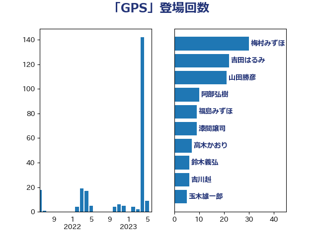

単語「GPS」

| 梅村みずほ | 日本維新の会 | 30 回 |
| 吉田はるみ | 立憲民主党 | 22 回 |
| 山田勝彦 | 立憲民主党 | 21 回 |
| 阿部弘樹 | 日本維新の会 | 10 回 |
| 福島みずほ | 社会民主党 | 9 回 |
| 漆間譲司 | 日本維新の会 | 9 回 |
| 高木かおり | 日本維新の会 | 7 回 |
| 鈴木義弘 | 国民民主党 | 6 回 |
| 吉川赳 | 無所属 | 6 回 |
| 玉木雄一郎 | 国民民主党 | 5 回 |
| 牧山ひろえ | 立憲民主党 | 5 回 |
| 水野素子 | 立憲民主党 | 4 回 |
| 東国幹 | 自由民主党 | 4 回 |
| 末松義規 | 立憲民主党 | 4 回 |
| 日下正喜 | 公明党 | 4 回 |
| 小林鷹之 | 自由民主党 | 4 回 |
| 小寺裕雄 | 自由民主党 | 4 回 |
| 小倉將信 | 自由民主党 | 4 回 |
| 平将明 | 自由民主党 | 3 回 |
| 勝部賢志 | 立憲民主党 | 3 回 |
| 伊藤孝恵 | 国民民主党 | 3 回 |
| 仁比聡平 | 日本共産党 | 3 回 |
| 鎌田さゆり | 立憲民主党 | 2 回 |
| 西村康稔 | 自由民主党 | 2 回 |
| 菅義偉 | 自由民主党 | 2 回 |
| 浜口誠 | 国民民主党 | 2 回 |
| 沢田良 | 日本維新の会 | 2 回 |
| 有村治子 | 自由民主党 | 2 回 |
| 大島敦 | 立憲民主党 | 2 回 |
| 大島九州男 | れいわ新選組 | 2 回 |
| 塩村あやか | 立憲民主党 | 2 回 |
| 佐々木さやか | 公明党 | 2 回 |
| 齋藤健 | 自由民主党 | 1 回 |
| 高橋千鶴子 | 日本共産党 | 1 回 |
| 芳賀道也 | 国民民主党 | 1 回 |
| 神津たけし | 立憲民主党 | 1 回 |
| 畦元将吾 | 自由民主党 | 1 回 |
| 田畑裕明 | 自由民主党 | 1 回 |
| 渡辺周 | 立憲民主党 | 1 回 |
| 浅野哲 | 国民民主党 | 1 回 |
| 武部新 | 自由民主党 | 1 回 |
| 平木大作 | 公明党 | 1 回 |
| 市村浩一郎 | 日本維新の会 | 1 回 |
| 山谷えり子 | 自由民主党 | 1 回 |
| 山本太郎 | れいわ新選組 | 1 回 |
| 山岸一生 | 立憲民主党 | 1 回 |
| 塩川鉄也 | 日本共産党 | 1 回 |
| 古賀之士 | 立憲民主党 | 1 回 |
| 住吉寛紀 | 日本維新の会 | 1 回 |
| 仁木博文 | 無所属 | 1 回 |